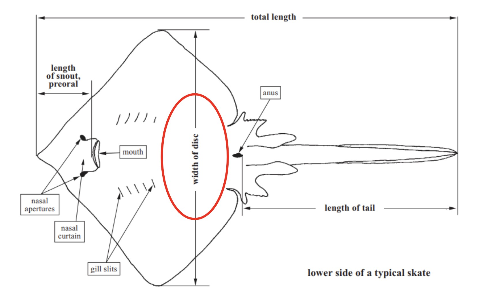
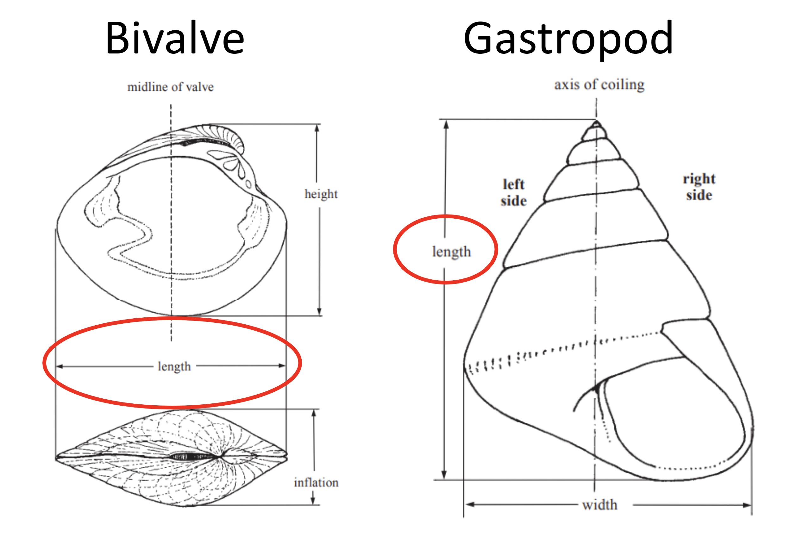

Bug-os nga Giya
Giya Sa Pagkolekta Sa Datos Sa Pagpangisda
Usa ka giya alang sa pagdumala sa mga survey aron makakuha og datos sa pangisda
Pasiuna
Ang kini nga dokumento naghatag giya ug mga rekomendasyon alang sa pagdumala sa tulo nga mga instrumento sa survey aron makuha ang kasayuran bahin sa mga komunidad sa pangisda ug mga pangisda nga ilang gisaligan (Figure 1). Ang mga survey gilaraw aron ipahiuyon ang sulud sa kung giunsa magamit ang datos ug gilauman ang frequency sa pagbag-o. Ang labing taas nga ang-ang survey, Sa Komunidad Profiling, naglangkob sa mga pangutana nga makatabang sa pagtukod sa usa ka mas maayo nga pagsabut sa kalihokan sa pagpangisda diha sa komunidad ug sa socioeconomic nga kahimtang. Ang pagsabut sa socio-economic landscape labi ka hinungdanon kung ang trabaho una magsugod sa usa ka komunidad. Ang kasayuran nga nakolekta sa kini nga survey hinungdanon alang sa pagdesinyo sa mga estratehiya sa pakiglambigit sa komunidad ug mga plano sa sampling sa datos. Ang Pag-Profile Ug Pag-Monitor sa Mga survey nagkolekta datos sa nakuha nga natanggong sa pangisda. Ang datos sa Pag-Profile sa Landing nakolekta dili kaayo kanunay ug nakuha ang kasayuran bahin sa puy-anan sa pangisda, tipo sa gear, paningkamot, ug gitas-on sa indibidwal nga isda. Ang Landings Monitoring survey, sa minithi nga gipahigayon sa adlaw-adlaw, mao ang usa ka paspas nga fisheries survey sa pagkolekta sa minimum nga kantidad sa impormasyon nga gikinahanglan aron sa pagsubay sa pagdakop gidaghanon ug bili sa mga kausaban, sama sa matang, gibug-aton, ihap ug bili.

Figure 1: Timeline alang sa pagdumala sa tulo nga lainlaing mga instrumento sa survey sa usa ka tuig nga sukod.
Mga Detalye Sa Survey
Komunidad Profiling Survey
Tumong
Sabta ang kinatibuk-ang talan-awon sa komunidad ug ang mga pangisda nga naglihok sa sulod sa komunidad.
Nakolekta Ang Datos
Gidaghanon sa mga miyembro sa komunidad, mangingisda, mga negosyante sa isda, mga babaye
Kinatibuk-ang talan-awon sa mga pangisda nga naglihok sa sulod sa komunidad
Gears nga gigamit; matang target; habitat isda; mga panahon; mga sudlanan
Impormasyon sa paningkamot sa pagpangisda ug gasto
Panglantaw sa pangisda ug habitat kahimtang, mga hulga
Impormasyon sa kasamtangan nga pagdumala sa pangisda/regulasyon
Identification (pinaagi sa mapa) sa importante nga mga nataran sa pangisda, puy-anan, landing sites
Target Nga Mamiminaw
10-20 key informants sulod sa komunidad, nga mao, mga lider sa komunidad, gitahod nga mga mangingisda, mga negosyante sa isda, ug mga babaye.
Frequency ug Sa Panahon
Kung nagsugod ang trabaho sa usa ka bag-ong komunidad sa pangisda, ang pagpahigayon sa Survey Sa Profiling sa Komunidad ug ang inisyal nga ehersisyo sa pag-profiling naghatag sa baseline data ug may kalabutan nga kasayuran sa pagdesinyo sa mga paningkamot sa pagtipig ug pagdumala nga labing angay alang sa komunidad. Ang pagsubli sa Survey sa Profiling sa Komunidad makatabang sa pagdokumento sa hinungdanon nga mga pagbag-o nga nahinabo sa paglabay sa panahon.
Pamaagi
Ang impormasyon mahimong makolekta pinaagi sa mga third-party survey (ie, census, fisheries department records, ug uban pa), focus nga mga grupo nga naglangkob sa 10-20 yawe nga mga miyembro sa komunidad o mahinungdanong mga impormasyon. Ang mga lider sa komunidad ingon man ang lainlaing kahibalo ug lainlaing mga mangingisda ug negosyante sa isda (lakip ang mga babaye ug mga batan-on) mao ang sulundon nga mga partisipante nga ilakip sa grupo sa pokus. Sa pagpasayon sa mga grupo sa focus, girekomenda nga adunay, sa labing gamay, usa ka facilitator ug usa ka note-taker. Sa focus group, girekomenda usab nga adunay mga partisipante nga maghatag usa ka lista sa/kasayuran sa pagkontak alang sa mga mangingisda sa komunidad nga mahimo ’ g makontak aron madumala ang Mga Survey sa Panimalay. Kung dili posible nga himuon ang Survey Sa Pag-Profile sa Komunidad sa usa ka format sa grupo nga focus, ang usa ka alternatibo mao ang pagdumala sa parehas nga mga pangutana sama sa tagsatagsa nga mga survey nga adunay hinungdanon nga mga informant ug pool ang mga tubag. Ang mga pangutana nga gilakip sa community profiling survey ug mga rekomendasyon alang sa pagpahigayon sa focus group discussions makita sa Apendise A sa ubos.
Landings Monitoring Survey
Tumong
Capture yawe data nga gikinahanglan sa kuwentahon ang yano nga gitas-on-based indicators sa fisheries sa panglawas ug sa pagsubay sa mga kausaban sa fisheries produksyon, bili, ug komposisyon.
Nakolekta Ang Datos
Petsa nga mitugpa
Location
Ngalan sa negosyante sa isda
Ngalan sa isda
Day fishing (day fishing/gleining)
Mga ngalan sa Species (lokal, komon, siyentipikong ngalan)
Total nga ihap
Total nga timbang
Total presyo
Rason total dakpon dili gibaligya, kon magamit
Target Nga Mamiminaw
Ang mga mangingisda sa ilang pagdakop o pagdakop sa mga isda sa balay/merkado sa mga pumapalit.
Frequency ug Sa Panahon
Ang Pag-Monitor sa Landings Kinahanglan nga ipahigayon adlaw-adlaw o kanunay kutob sa mahimo. Paghimo Og Mga Landings Monitoring Survey sa dili pa ug human sa pagpatuman aron masusi ang mga epekto sa pagsira sa pangisda o uban pang mga pamaagi sa pagdumala. Girekomenda namon ang pagkolekta sa datos 30 ka adlaw sa wala pa ug pagkahuman sa temporaryo nga mga panahon sa pagsira. Kay sa unang pito ka adlaw sa sampling mga panahon, kita og rekomend nga enumerators pagpahigayon Landings Monitoring Survey sa adlaw-adlaw. Kung mahimo, ipadayon ang adlaw-adlaw nga pag-monitor alang sa tibuuk nga 30-adlaw nga panahon. Kung dili kini posible, pag-survey labing menos 80% sa mga adlaw sulod sa matag 30 ka adlaw. Girekomenda usab namon ang pagsuhid sa 80% o labaw pa sa tanan nga mga mangingisda nga nakadakup sa usa ka partikular nga adlaw nga pre o post-closure. Pag-apod-apod sa mga paningkamot sa representante nga survey tali sa mga mangingisda sa sakayan ug mga dili-bangka nga mangingisda. Mangolekta og datos gikan sa tanan nga mga mangingisda nga mitugpa sa baryo, dili igsapayan kung sila nangisda sa sulod sa closure site.
Alang sa mas dugay nga pagsira, siguruha nga ang datos nakolekta sa parehas nga bulan alang sa matag tuig aron makuha ang pagbag-o sa panahon sa pagsira. Kung dili kana mahimo, girekomenda namon ang pagkolekta sa datos sa parehas nga bulan sa wala pa ug pagkahuman sa pagsira. Ingon sa gipahayag sa taas, girekomenda namon ang pagsurbi sa labing menos 80% sa adlaw sa sulud sa bulan ug 80% sa mga mangingisda nga nakakuha sa landing sa matag adlaw.
Pamaagi
Pinaagi sa paggamit sa kobo nga porma, sa pagsugat sa mangingisda sa landing sites/buyers’ mga balay sa pagrekord sa ilang mga pagdakop.
Kapangyarihan: Ang Kapangyarihan
Tumong
Sabta ang naobserbahan catch trends.
Nakolekta Ang Datos
Petsa nga mitugpa
Location
Pangisda ground
Ngalan sa negosyante sa isda
Ngalan sa isda
Fishing Effort (mga oras ug mga adlaw sa pagpangisda/pagpanghagdaw)
Matang sa barko (gidaghanon sa barko, gidaghanon sa tripulante)
Mga ngalan sa Species (lokal, komon, siyentipikong ngalan)
Gears nga gigamit
Isda sa Habitat
Total nga ihap
Total nga timbang
Total presyo
Rason total dakpon dili gibaligya, kon magamit
Mga sampol sa tagsatagsa nga gibug-aton ug gitas-on (Numero 2-8)
Partner-piho nga sample data (sex, catch kalidad, gonads, estilo, # lit-ag, etc.)
Target Nga Mamiminaw
Usa ka representante nga sample sa pagdakup sa sulud sa komunidad. Pagrekord labing menos 50 ka mga sampol (labing menos 100) alang sa matag target nga espisye, nga nagrepresentar sa lainlaing mga tipo sa gear ug mga profile sa mangingisda.
Frequency ug Sa Panahon
Ang kini nga survey kinahanglan una nga himuon sa pagsugod sa pag-apil sa usa ka komunidad ug pagkahuman gihimo matag usa sa duha ka tuig, sa wala pa ug pagkahuman sa pagpatuman sa estratehiya sa pagdumala, o kung kinahanglan aron ipatin-aw ang mga pagkunhod nga naobserbahan pinaagi sa datos sa pag-monitor. Pinaagi sa paggamit sa kobo nga porma, sa pagsugat sa mga mangingisda sa landing sites sa sample sa ilang pagdakop ug sa pagrekord sa ilang mga pangisda nga kalihokan.
Pamaagi
Pinaagi sa paggamit sa kobo nga porma, sa pagsugat sa mga mangingisda sa landing sites sa sample sa ilang pagdakop ug sa pagrekord sa ilang mga pangisda nga kalihokan.
Pagsukod Standardization: Gitas-on type sa pagsukod sa species group

Figure 2: Ang Kinatibuk-ang gitas-on kinahanglan gamiton aron sukdon ang finfish, shark ug eel (AFS).

Figure 3: Ang Gilapdon sa disc kinahanglan gamiton sa pagsukod sa mga silaw ug mga skate.

Figure 4: ang gilapdon sa Carapace kinahanglan gamiton sa pagsukod sa crab (Suryandari et. ang (2018).

Figure 5: Ang gitas-on sa Mantle kinahanglan gamiton sa pagsukod sa kugita ug pusit (FAO).

Figure 6: Ang gitas-on sa Carapace kinahanglan gamiton sa pagsukod sa hipon ug lobster (Hart et al. 2001).

Figure 7: Ang Gitas-on kinahanglan gamiton sa pagsukod sa bivalves ug gastropods.

Numero 8: Ang Kinatibuk-ang gitas-on kinahanglan gamiton sa pagsukod sa mga pepino sa dagat. Ang gilapdon o diametro sa pagsulay kinahanglan gamiton kung sukdon ang mga urchin sa dagat.
Data Dagan Overview
Nagtiniil Sa Kadagatan proseso ug analisar yawe pangisdaan ug socioeconomic data nga gipanag-iya sa partnership organisasyon pinaagi sa data sharing. Sa ato pa, ang mga kauban tag-iya sa datos, ug giproseso kini Sa Dagat Nga Wala ’ y Sapin. Ang pagkolekta sa datos, pag-validate, pagbag-o, ug paghanduraw mao ang upat nga punoan nga sangkap sa Nagtiniil Nga Sistema sa datos sa Kadagatan. Ang nag-Unang aplikasyon software nga gigamit Mao Ang KoboToolBox, Smartsheet, PostgreSQL, Ug R.
Ang KoboToolBox usa ka libre ug bukas nga gigikanan nga software nga usa ka kusug nga himan alang sa pagkolekta sa datos nga ma-access pinaagi sa mga mahagiton nga palibot ug daghang mga platform, sama sa mga mobile device, kompyuter, ug papel. Ang mga Enumerators nagkolekta sa datos sa socioeconomic ug ekolohikal nga mga kondisyon nga mahinungdanon sa pagtimbang-timbang sa mga komunidad sa pangisda ug mga kahimtang pinaagi sa Nagtiniil Nga Kadagatan KoboToolBox survey questionnaires. Ang Smartsheet usa ka plataporma sa pagdumala sa pagtinabangay nga naghatag usa ka dali ug intuitive nga interface alang sa mga organisasyon nga magplano, magsubay, mag-automate, ug magdumala sa lainlaing mga proyekto ug proseso sa tinuud nga oras. Ang mga pakisayran nga mga file nga gigamit aron mapuno ang mga porma sa survey ug magkonektar sa dugang nga datos sa master datasets gidumala Sa Smartsheet. Dugang pa, ang datos gipamatud-an Sa Smartsheet. Ang PostgreSQL usa ka libre ug bukas nga gigikanan nga sistema sa pagdumala sa database nga gigamit ingon usa ka bodega sa datos alang sa daghang mga aplikasyon sa web, analytics, ug geospatial samtang gitipig ang wala ’ y istruktura ug istruktura nga datos sa usa ka produkto. Ang R usa ka open-source software environment ug programming language nga kaylap nga gigamit alang sa data science, statistical computing, ug data visualization. Ang mga dashboard sa datos gitukod gamit Ang Sinaw Nga pakete Gikan Sa r programming language ug gidumala sa shinyapps.io Usa ka plataporma ingon usa ka Serbisyo (PaaS) alang sa pag-host sa Sinaw nga mga web app (aplikasyon).

Figure 9: Nagtiniil Sa Dagat Data Dagan diagram.
Ang pagkolekta sa datos naglangkob sa sistematikong pagkolekta ug pagsukod sa kasayuran gikan sa mga may kalabutan nga mga gigikanan sa mga variable of interest alang sa paghimo og desisyon, estratehikong pagplano, mga pagsusi sa sangputanan, ug uban pang mga katuyoan. Pinaagi sa paggamit sa quantitative ug qualitative data sa survey questionnaires, Nagtiniil Ocean nag-focus sa mixed-method survey sa proseso sa pagkolekta data sa pagpalambo sa usa ka labaw nga sa-kahiladman pagsabot sa socioeconomic ug ekolohikal nga mga kahimtang nga may kalabutan sa mga komunidad pangisda ug mapaigoigoon management mga pamaagi. Ang pagpanghimatuud sa datos nagtumong sa pagpadapat sa mga pamaagi aron masukod ang mga kondisyon sa nakolekta nga datos ug mahibal-an kung ang nakolekta nga datos nakab-ot ang gihubit nga mga sukdanan sa kalidad, sama sa katukma, pagkamakanunayon, kalabutan, pagkakompleto, ug pagkatalagsaon. Ang pagbag-o sa datos nagbag-o, gihinloan, ug gihan-ay ang hilaw nga datos sa usa ka magamit nga format nga mahimong analisahon ug masusi alang sa paghimo og desisyon. Data analysis ug visualization naglakip sa pagdesinyo ug pagmugna accessible graphics o visual pagpasundayag sa impormasyon sa epektibo nga makig-estorya sa mga komplikado qualitative ug quantitative data kaniadto nakolekta, napamatud-an, ug mausab sa tibuok target mamiminaw. Gihubit namon ang proseso sa pag agos sa datos sa ubos:
Ang datos nakolekta pinaagi sa mga porma sa survey Sa KoboToolBox.
Ang datos gibalhin sa Nagtinagurha Ocean database.
Kung gipili sa enumerator ang mga kapilian nga pre-populated nga tubag sa mga survey, ang datos dili kinahanglan mapanghimatuud ug direkta nga makaagi sa proseso sa pagtuki ug paghanduraw sa datos.
Kung ang enumerator mano-mano nga mosulod sa datos sama sa usa ka bag-ong mangingisda, pumapalit, data collector, landing site, o species, ang datos gipamatud-an Sa Smartsheet sa wala pa maapil sa katapusan nga lamesa sa datos ug makita sa dashboard. Ang mga lead sa Field team gipahibalo pinaagi sa email kung ang datos andam na alang sa pagpanghimatuud. Ang mga lead sa Team mano-mano nga susihon ang mga lamesa sa pagkontrol sa kalidad aron kumpirmahon nga ang bag-ong gidugang nga kasayuran balido.
Pagkahuman sa pag-validate, ang bag-ong datos giduso sa parehas nga mga file sa pakisayran ug balik sa database alang sa katapusang pagbag-o sa wala pa ang pagtuki ug paghanduraw.
Sa higayon nga ang datos iduso sa mga file sa pakisayran, ang mga lead sa team ipahibalo pinaagi sa email kung adunay dugang nga kasayuran nga gikinahanglan sa mga file sa pakisayran.
Ang gi-update nga mga reference nga mga file dayon i-upload sa kobotoolbox platform alang sa paglakip sa mga porma.
Ang gi-update nga datos gikan sa mga file sa pakisayran gigamit usab sa proseso sa pagbag-o sa datos aron moapil sa dugang nga mga natad sa datos sama sa koordinasyon ug gender.
Ang katapusang mga lakang sa proseso sa pagbag-o sa datos nagresulta sa mga lamesa sa master data nga gigamit alang sa pagtuki sa datos ug paghanduraw sa mga dashboard sa datos.
Ang mga dashboard sa datos (ie Shiny apps) direkta nga nagkonektar sa database, nga nagbira sa labing bag-ong datos nga magamit, sa ingon naghatag mga kauban duol sa diha-diha nga pag-access sa hilaw ug gisumada nga datos.
Seguridad Sa Datos
Sa ubos usa ka lista sa mga platform sa software diin ang datos mahimong tipigan ug ibalhin gikan sa database. Ang kasayuran sa seguridad sa datos alang sa matag panggawas nga plataporma magamit sa website nga piho sa platform nga na-link dinhi.
Ang Barefoot Ocean nagpatuman sa daghang mga pamaagi sa seguridad sa datos dugang sa mga lakang sa seguridad sa datos nga gihatag sa mga platform sa software sa taas. Ang tanan nga mga asoy sa tanan nga mga software platform nga gigamit Sa Nagtiniil Dagat ang password gipanalipdan.
Gigamit namon Ang Github ingon among sistema sa pagkontrol sa bersyon alang sa mga produkto nga coded. Pinaagi sa default, ang tanan nga mga folder ug mga proyekto nga adunay fisheries ug socioeconomic nga datos pribado ug ma-access ra sa Nagtiniil nga kawani ug mga kontraktor sa Kadagatan.
Gikan sa bisan unsang gipaambit nga mga platform sa datos (pananglitan Sinaw Nga Mga App), kinahanglan ang panghimatuud sa gumagamit alang sa pagtan-aw o pag-download sa datos, depende sa kasabutan sa pagpakigbahin sa datos nga gipili sa matag kauban nga organisasyon. Kauban niini ang pagpanghimatuud sa mga ninggamit sa wala pa tugutan ang datos nga makita o ma-download, pag-log in sa mga platform sa visualization sa datos, ug regular nga pagdumala sa napamatud-an nga mga ninggamit sa Nagtiniil Nga Koponan Sa Dagat.
Ang Pag-Access sa Mga dokumento sa Smartsheet (pananglitan mga file nga pakisayran, mga sheet sa pag-validate sa datos) gikutuban sa mga kawani nga giila sa matag organisasyon, ug ang matag kaparis mahimo ra nga tan-awon ang ilang kaugalingon nga kasayuran nga piho sa kauban. Ang mga eksepsiyon niini naglakip sa mga kawani nga Nagtiniil Sa Dagat nga nagkontrol ug nagtabang sa kalidad sa datos nga mga daloy sa trabaho, Ug Mga Blue Ventures staff nga nagtabang sa mga kauban sa mga workflows sa kasayuran sa Smartsheet.
Data Privacy
Ang Personal identifiable information (PII) ug fisheries catch data gipanag-iya sa mga mangingisda ug mga mamalitay sa isda ug dili gayud ipaambit nga walay una nga pagtugot. Aron mapanalipdan ang pagkapribado sa mga mangingisda, pumapalit, ug mga kolektor sa datos, ang tanan nga mga ngalan dili mailhan sa mga numero sa random identification. Busa, ang tanan nga bahin o bug-os nga magamit nga datos sa publiko maglakip lamang sa mga numero sa random, numeric id. Tan-awa ang seksyon sa pagpaambit sa datos alang sa usa ka hingpit nga katin-awan sa mga kasabutan sa pagpaambit sa datos.
Ang datos nga gikonsiderar NGA PI naglakip sa:
Ang mga ngalan sa mga mangingisda, buyers, ug data collectors
Ngalan sa mga respondents alang sa bisan unsang survey
Data Pagpakigbahin
Ang Nagtiniil Ocean fisheries data system gilaraw aron mapadali ang paggamit sa imong datos ug maghatag usa ka plataporma alang sa imong aktibo nga pakiglambigit sa labi ka halapad nga pagdumala sa pangisda ug mga paningkamot sa pagtipig. Ang nakolekta nga datos nga nagtinabangay sa tibuuk nga mga kasosyo makahatag kusog nga mga panan-aw alang sa pag-monitor sa pangisda, pagsusi sa mga estratehiya sa pagdumala, paggiya sa paghimo og desisyon sa lokal ug nasudnon nga lebel, pagsabut sa mga pagbag-o sa rehiyon, ug pag-ila sa potensyal nga serbisyo sa pinansya.
Giila namon ang hinungdanon nga kahinungdanon sa pagpanag-iya sa datos ug paggamit alang sa tanan nga nag-amot nga mga kauban. Ang among katuyoan mao ang paghatag kanimo sa pagka-flexible sa pagdumala ug pagtino kung giunsa gigamit ang imong datos. Pinaagi sa pagpili sa usa sa tulo nga lebel sa pagtugot sa paggamit sa datos, mahimo nimong makontrol ang gilapdon diin gipaambit ang imong datos sa ubang mga ninggamit. Mahimo nimo ipasibo ang lebel sa pagtugot pinahiuyon sa mga lahi sa datos, ug labi ka hinungdan, adunay ka kagawasan sa pag-adjust sa lebel sa pagtugot sa imong datos bisan unsang orasa. Ang Personal identifiable information (PII) ug fisheries catch data gipanag-iya sa mga mangingisda ug mga mamalitay sa isda ug dili gayud ipaambit nga walay una nga pagtugot. Pinaagi sa pagpili sa lebel sa pagtugot sa paggamit sa datos, imong gikumpirma nga ang mga indibidwal nga pagtugot nakuha gikan sa mga namalit sa isda ug isda.
Ang tanan nga mga numero gibutang Sa Lebel Nga 1 - Pribado. Ang mga mogamit adunay higayon nga ayohon ang ilang lebel sa pagtugot kung kinahanglan.
Day 1 - Private
Ang data mao ang hugot nga alang sa internal nga mga katuyoan sa mga orihinal nga data contributor.
Ang datos mahimong ma-download sa orihinal nga magtatampo sa datos.
Ang datos dili iapil sa mga rehiyonal nga pagtuki nga gihatag sa dashboard.
Ang dili awtorisado nga pagpakigbahin o pag-apod-apod sa datos ngadto sa mga panggawas nga partido hugot nga gidili.
Level 2-Pagpakigbahin sa Uban Nga Mga Data Contributors
Ang datos sa lebel sa pagbiyahe magamit alang sa ubang mga magtatampo sa datos nga ma-download.
Ang mga katingbanan sa datos ug mga panan-aw magamit alang sa ubang mga magtatampo sa datos.
Ang mga datos sa rehiyonal nga pagtuki sa dashboard.
Level 3-Share uban Sa Tanan Nga Mga Tiggamit
Ang datos sa lebel sa pagbiyahe magamit alang sa tanan nga mga ninggamit sa pag-download.
Ang mga summary ug visualization sa datos magamit alang sa tanan nga mga ninggamit.
Ang mga datos sa rehiyonal nga pagtuki sa dashboard.
Ang orihinal nga tigtampo sa datos mahimong magtino sa bisan unsang mga limitasyon sa paggamit o mga kondisyon nga magamit sa tanan nga tiggamit.
Bag-o ug Flagged Data
Sa mga survey, ang pila ka mga pangutana nagtugot sa mga enumerator nga magdugang usa ka bag-ong mangingisda, pumapalit, data collector, landing site, species, o “uban pa.”“Ang kasayuran gikan sa kini nga mga kapilian mga bag-ong puntos sa datos ug kinahanglan nga ipailalom sa pagpanghimatuud sa wala pa iduso sa katapusang dataset, nga makita sa dashboard, ug idugang sa mga file sa pakisayran. Adunay usab mga pagpugong nga gitakda sa gibug-aton, presyo ug gitas-on sa usa ka species, ug kung ang datos nga nakolekta sa ubos o sa ibabaw niini nga mga limitasyon, kini nga mga kantidad gibandera alang sa pagrepaso. Ang mga limitasyon sa gibug-aton ug presyo gitakda sa mga kauban sa min_max_ref. Ang mga pagpugong sa gitas-on sa Species gitakda sa Nagtiniil Nga Koponan Sa Dagat gamit ang mga parameter sa biolohikal.
Ang tanan nga datos nga nag-agos pinaagi sa sistema sa datos sa pangisda gipamatud-an Sa Smartsheet. Ang bisan kinsa sa kini nga mga bag-o o gi-flag nga mga entry gipadala sa lamesa sa quality control (QA) Sa Smartsheet alang sa mga koponan sa uma aron mapamatud-an. Ang mga lamesa sa pagkontrol sa kalidad piho nga kauban ug mahimong ma-access pinaagi sa mga hangyo sa pag-update nga gipadala sa imong email o pinaagi sa pagbisita sa Dinamikong mga link sa Pagtan-aw nga gihatag kanimo. Ang mga lead sa Field team ipahibalo pinaagi sa email kung ang datos kinahanglan nga mapamatud-an sa MGA lamesa SA QA. Sa higayon nga ang datos mapamatud-an sa MGA lamesa sa QA, maghimo kami bag-ong kasayuran sa pakisayran nga file ug maghatag mga kinahanglan nga pagtul-id sa master dataset.
Ang piho, matag lakang nga mga panudlo kung giunsa makompleto Ang pag-validate sa datos Sa Smartsheet makit-an sa panid Sa Pag-Validate sa Datos.
Pagkolekta Sa Datos
Nagtiniil Ocean nagdumala sa tanan nga mga survey pinaagi Sa Kobo Toolbox mga porma shareable pinaagi sa Usa ka Kobo Toolbox account. Mahimo ka mag-set up usa ka account https://kf.kobotoolbox.org/accounts/signup Palihug kontaka ang Imong Username Ug mga detalye sa account. Sa higayon nga ang mga survey sa mga mipakigbahin, access Sa Kobo mga porma pinaagi Sa KoboCollect free Android mobile phone app o Pinaagi sa Enketo web nga porma. Ang detalyado nga mga panudlo sa pag-set up sa usa ka kobo account, pagkolekta sa datos, ug pagsumite sa datos makit-an sa panid sa Pag-Setup sa Kobo. Paggamit USA ka QR code aron ma-configure ang tanan nga mga aparato pagkahuman sa kamut nga pag-set up sa una nga telepono o tablet aron ma-set up ang daghang mga telepono o tablet sa ilalum sa usa ka account sa pagkolekta sa datos. Manwal setup sa unang device nagkinahanglan Sa KOBO server URL, username, ug password. ANG KOBO server URL https://kc.kobotoolbox.org. Dugang nga kasayuran sa pag-set up sa pagkolekta sa datos sa Kobo, lakip ang kung giunsa ang pag-configure sa daghang mga aparato sa pagkolekta sa datos pinaagi sa USA KA QR code, makit-an sa https://support.kobotoolbox.org/.
Sa higayon nga inyong na-download KoboCollect, abli sa app ug mosulod sa server URL, username, ug password sa sumpaysumpaya ang imong KoboCollect app sa kobotoolbox server. Ang pagkonektar sa KoboCollect app sa kobotoolbox server nagtugot kanimo sa pag-download sa mga porma nga gipakatap gikan sa KoboToolbox sa imong mobile device ug ipadala ang datos nga nakolekta pinaagi sa app balik sa server. Sa home screen, pilia ang ” Get Blangko Nga Porma.”“Usa ka lista sa tanan nimong gipakatap nga mga porma sa survey kinahanglan makita. Pindota ang”Pilia Ang Tanan” aron ipadala ang tanan nga mga porma sa survey sa app, o pilia ang mga gusto nimo pinaagi sa pagpili niini sa kamut. Unya i-klik “Get Pinili nga.”Aron ma-deploy ang survey, pilia ang “Pun-a Ang Blangko nga Porma.”
Samtang ang webform awtomatik nga gi-update kung ang usa ka bag-ong bersyon sa survey anaa, ang mga tiggamit kinahanglan nga mag-configure sa “auto-update” mismo sa app. Ang kanunay nga pag-update sa mga survey sa app nagsiguro sa paggamit sa labing bag-ong bersyon sa porma ug dili hinungdan sa mga isyu sa pipeline sa datos. Mahimo nimong i-set up ang auto-update sa app pinaagi sa pag-adto sa “Settings” ug “Form Management.”“Ang dugang nga kasayuran sa awtomatikong pag-update sa mga survey sa app makit-an sa panid sa Pag-Setup Sa Kobo. Mahinungdanon nga hinumdoman nga ang usa ka koneksyon gikinahanglan alang sa app aron makuha ang labing bag-ong bersyon sa survey, bisan sa mga setting sa pag-update sa auto. Busa, advise enumerators nga adunay usa ka internet koneksyon sa atubangan sa pagpahigayon sa uma nga buhat aron KoboCollect mahimo pagbitad sa labing bag-o nga bersyon.
Human sa pagkolekta sa datos, ang mga survey nga gisumite pinaagi sa web form awtomatik nga isumite sa server sa higayon nga ang data collector moigo sa “Submit” button. Ang datos nga nakolekta pinaagi sa kobocollect app una nga natipig sa app sa usa ka lugar nga naghupot ug pagkahuman giduso sa server. Ang nakompleto nga mga survey nagpabilin sa paghupot sa wala pa isumite sa server aron ang mga kolektor sa datos makahimo sa mga pag-edit sa survey pagkahuman sa pagkolekta sa datos, o kung wala ’ y koneksyon sa internet, ang app makaluwas sa mga survey ug dayon iduso ang mga survey sa server kung adunay koneksyon sa internet. Sa piho nga paagi, kung kompleto ang survey, maigo sa mogamit ang “Save form ug exit,” nga gisiguro nga ang “Mark form ingon nahuman” gisusi usab. Ang “Edit Saved Form” awtomatik nga nagtipig sa naluwas nga porma. Ang data collector makahimo sa gikinahanglan nga mga kausaban ug pagpili “Luwasa Porma ug Exit. Ang home screen usab adunay usa ka buton nga gitawag nga”Ipadala Ang Nahuman nga Porma.”Press Pagpili Sa Tanan nga mga (o pagpili sa mga nga imong gusto sa upload) ug unya mopadayon “Ipadala Pinili nga.”Pagpili” View Gipadala Nga Porma” aron masiguro ang malampuson nga pag-upload sa mga porma ug kinahanglan nimo karon nga makita ang tanan nga gisumite nga mga porma.
Ang usa ka sentral nga sistema sa pagtipig sa datos nagsumpay sa datos sa Kobo, ug ang mga awtomatikong pag-analisar ug paghanduraw magamit pinaagi sa usa ka standardized dashboard. Ang hilaw nga datos gipaluyohan sa database Sa kobotoolbox ug magamit pinaagi sa pag-download o direkta nga link sa laing database o bodega sa datos.
Mga hubad
Ang mga paghubad alang sa tanan nga mga sinultian nahuman pinaagi sa pag-edit sa Mga sheet sa paghubad Sa Smartsheet. Kung nahibal-an nimo nga ang usa ka paghubad nanginahanglan pag-update o sayup sa mga survey, palihug direkta nga i-update ang katugbang nga paghubad sa angay Nga Smartsheet sheet. Kon ang Nagtiniil Nga Ocean team nagkinahanglan og bag-ong mga hubad, sila mokomentaryo ug mohatag sa buluhaton sa pagpangulo sa team sa nasud.
Reference File
Ang mga pakisayran nga file mga kauban o piho nga nasud ug adunay sulud nga komprehensibo nga kasayuran sa lebel sa administratibo sa mga komunidad sa pangisda (nasud, lalawigan, distrito, baryo), mga landing site, mangingisda, pumapalit, data collector, mga lugar sa pagdumala, mga tipo sa puy-anan, mga tipo sa gear, ug mga organisasyon sa pakigtambayayong. Ang pila ka kasayuran nagpopular sa mga lista sa dropdown sa mga survey, ug ang uban giapil sa master data pagkahuman nakolekta ang datos. Ang bag-ong kasayuran kinahanglan idugang direkta sa mga sheet sa pakisayran.
Piho nga, lakang-sa-lakang nga mga panudlo alang sa kon sa unsang paagi sa pag-update sa pakisayran files Sa Smartsheet makita diha sa Pakisayran Files panid.
Apendise A: Giya Sa Panaghisgutan Sa Grupo Sa Focus
Importante nga mga konsiderasyon sa dili pa pagpahigayon sa pangisda profiling o survey
Relasyon ug pagsalig
Ang pagtukod sa mga relasyon ug pag-angkon og pagsalig gikan sa komunidad usa ka importante nga lakang sa dili pa mangayo mahitungod sa impormasyon sa pangisda. Ang unang lakang sa pagtukod sa mga relasyon ug pag-angkon sa komunidad nga pagsalig mao ang pagpaila sa imong kaugalingon, sa imong organisasyon, ug sa katuyoan sa pagpahigayon sa fisheries profiling.
Pagpangandam
Ang pag-andam importante sa pagpahigayon sa matag pamaagi sa survey, tungod kay ang maayong pagpangandam makahatag kanimo og pagsalig sa pagka-epektibo sa matag pamaagi nga imong gigamit.
Panahon sa pagkolekta sa impormasyon
I-Adjust ang oras sa pagpahigayon sa matag pamaagi sa panahon sa umaabot nga respondent o target nga grupo sa komunidad.
Tubiganan
Ang pagsabut sa mga potensyal nga respondents nga imong mahimamat sa panahon sa pangisda ang pag-profile hinungdanon sa paghimo og mga survey. Ang mga grupo o indibidwal nga naa sa survey kinahanglan makadawat una nga pahibalo. Busa, sa pagpaila sa impluwensiyadong mga lider sa komunidad kinahanglan nga bahin sa pre-survey nga buhat.
Logistics
Ang matag pamaagi adunay logistic ug materyal nga mga panginahanglan. Siguruha nga ang mga kahinguhaan ug kagamitan nga gikinahanglan alang sa matag pamaagi sa pag-profile sa pangisda giandam na.
Yawe nga tawo contact listahan
Luwasa ang usa ka yawe nga tawo contact listahan sa ibabaw sa imong telepono ug usab sa usa ka giimprinta nga bersyon alang sa back up.
Panglawas ug kaluwasan
Siguroha nga kamo anaa sa usa ka maayo nga kahimtang sa pagpahigayon sa fisheries profiling. Pagdala og first aid kit.
Focus Group Panaghisgutan Giya
Ang mosunod naglangkob giya ug mga rekomendasyon sa pagpahigayon sa usa ka focus grupo sa pagdakop sa komunidad profiling impormasyon. Ang paghupot sa usa ka sesyon sa grupo sa focus girekomenda aron awhagon ang dayalogo, makuha ang pagkalainlain sa mga opinyon, ug magsugod sa pagtukod mga relasyon sa mga hinungdanon nga miyembro sa komunidad. Apan, sa kaso nga ang usa ka focus nga grupo dili mahimo, ang komunidad profiling survey mahimong gipahigayon ingon nga tagsa-tagsa nga mga interbyu uban sa importante nga mga stakeholders sa paggamit sa “Community Profiling Survey” kobo nga porma. Sa kinatibuk-an, ang katuyoan sa ehersisyo sa pag-profiling sa komunidad, bisan sa usa ka format sa pag-focus o indibidwal nga interbyu, aron masabtan ang kinatibuk-ang talan-awon sa komunidad ug ang mga pangisda nga naglihok sa sulud sa komunidad.
I. Paghimo usa ka grupo sa pag-focus
Sa wala pa host sa usa ka pormal nga fisheries profiling focus grupo, kini girekomendar sa pagpahigayon sa dili pormal nga panag-istoryahanay ug sa partisipante obserbasyon. Kini nga pamaagi nagpasabut sa paggahin og panahon, pagtukod og mga relasyon, ug pagsabut sa pangisda gamit ang dili pormal nga panag-istoryahanay ug obserbasyon sa sumasalmot.
Ang dili pormal nga panag-istoryahanay importante aron mas masabtan ang kinatibuk-ang konteksto sa pangisda sa dili pa ipahigayon ang panaghisgutan sa grupo sa focus. Gamita kini nga pamaagi ingon usa sa mga punto sa pagsugod aron maporma ang sulud sa diskusyon sa grupo sa focus. Kini nga pamaagi magtugot kanimo nga mahibal-an ang komunidad sa pangisda, magsugod sa pagtukod og mga relasyon, ug makakuha og pagsalig.
Girekomendar tips sa pagpahigayon sa dili pormal nga panag istoryahanay:
Pagtahod sa mga kalainan sa kultura. Sunda ang mga lagda sa katilingban sama sa madawat nga mga pangomosta, mga code sa pamiste, ug pagtahud sa relihiyosong mga binuhatan. Pagmatinahuron, pagpaubos, ug pagpamati sa mga opinyon sa mga hingtungdan nga dili ipahamtang ang imong kaugalingon. Ang pagpabilin sa sulud sa usa ka komunidad, paghimo usa ka taho, ug pagpaambit sa mga pagkaon makatabang sa pagpalig-on sa pagsalig.
Paggahin og panahon uban sa mga stakeholder. Wala ’ y laktud nga paagi aron makuha ang pagsalig ug suporta. Ilabi na sa sulod sa mga komunidad kini mao ang maayo nga makita, mogahin og panahon diha sa mga balangay ug sa pagsugat sa mga tawo. Pag-andam sa paghisgot sa mas lapad nga mga isyu sa sulod sa komunidad. Ayaw pagsulay sa pagduso sa usa ka piho nga agenda.
Gamita ang lokal nga pinulongan kon mahimo, gawas kon ang usa ka komon nga pinulongan mao ang accessible. Kung dili, paggamit usa ka maghuhubad. Pag-amping sa mga sayup sa paghubad. Ang pag-cross check sa paghubad tali sa labaw sa usa ka maghuhubad makatabang sa pagpakunhod sa sayop nga interpretasyon.
Ayaw pagsaad og mga saad nga dili matuman. Tin-aw sa mga katuyoan ug gilauman nga mga sangputanan nga wala ’ y pagpataas sa mga gilauman. Kini mao ang importante nga gibug-aton sa sayo sa mao nga ang mga komunidad adunay usa ka tin-aw nga pagsabot sa papel sa mga teknikal nga partner, i.e. sa pagpahigayon sa kugita fisherery pagsira, dili sa pagkalot atabay o pag-ayo sa mga eskwelahan. Kini mao ang importante aron sa pagsiguro nga ang tanan nahibalo sa unsa ang organisasyon mahimo ug dili sa pagbuhat sa sulod sa komunidad. Ang pagsiguro sa realistiko nga mga gilauman makatabang sa pagpaminus sa kasagmuyo, reklamo, ug mga panagbangi samtang nagpadayon ang proyekto.
Ipakigbahin ang mga plano ug mga kalihokan kaylap. Siguruha nga ang bisan unsang mga miting o kalihokan giplano nga daan ug sa mga oras nga magkauyon ug mga lokasyon aron mapadako ang pagtambong. Siguruha nga ang bisan unsang mga pagbag-o sa mga plano ug kalihokan gipahibalo sa labing dali nga panahon. Ang husto nga oras ug pagpadayon sa mga kasabutan makatabang sa pagpalig-on sa pagsalig ug pagsalig taliwala sa mga hingtungdan.
Ilha kanunay ang mga stakeholders sa mga output sa proyekto sama sa mga taho ug pagpagawas sa media sulod sa mga miting sa stakeholder ug sa gawas nga mga presentasyon. Pagmatngon sa impormasyon ‘pagpanag-iya’ ug pagtahod confidentiality ug privacy.
Ang mas maayo nga pagsabut sa talan-awon sa mga stakeholder sa komunidad usa ka hinungdanon nga katuyoan sa pagpahigayon sa dili pormal nga pagpreserba ug pag-obserbar sa partisipante. Ang mga stakeholder mahimong maapektuhan o maapektuhan sa mga aksyon sa usa ka organisasyon. Ang ilang suporta hinungdanon alang sa kalampusan sa usa ka organisasyon sa pagpatuman sa mga plano sa pagdumala sa pangisda. Pinaagi sa mas maayo nga pagsabut sa mga stakeholders, ikaw epektibo nga pag-ila sa mga stakeholders nga nalambigit sa umaabot nga fisheries monitoring alang sa fisheries management sa ilang dapit.
Mga panig-ingnan sa mga stakeholders nga naglakip sa:
Mangingisda
Ulo sa barangay
Hugot nga pagtuo/relihiyosong mga lider
Ulo sa distrito
Mga health worker/health worker
Village buyer/supplier
Planta sa pagproseso
Mga babaye sa baryo/mga asawa sa mangingisda
Impormasyon nga nakolekta sa mga stakeholders:
- Impormasyon mahitungod sa yawe stakeholders ug sa ilang mga posisyon sa relasyon ngadto sa usa ka kompaniya sa mga tumong (matang sa suporta, gahum, etc.). Kini nga impormasyon mahimong gamiton sa pag-ila nga mga stakeholders sa pag-apil diha sa komunidad profiling focus group.
Human sa pagpahigayon sa dili pormal nga mga panag-istoryahanay, ang sunod nga lakang nga imong mahimo mao ang obserbasyon sa partisipante. Ang obserbasyon usa ka pamaagi nga nagtugot kanimo sa paggamit sa mga panghitabo sa imong palibut aron magtigum mga timailhan ug maghimo mga konklusyon bahin sa piho nga mga lokal o kasinatian pinaagi sa pag-obserbar sa usa ka adlaw sa baryo sa pangisda. Kini nga pamaagi mao ang gikinahanglan aron sa pagtigum sa ebidensiya gikan sa impormasyon nga gihatag sa dili pormal nga panag-istoryahanay. Kini nga pamaagi nagtugot kanimo nga masabtan ang adlaw-adlaw nga kalihokan sa pangisda sa baryo.
II. Focus Grupo Pamaagi
A. Pag-organisar sa focus group
Hinungdanon nga ipadayon ang maayong relasyon sa mga target nga komunidad. Busa, kon mahimo, ang mga balangay kinahanglan nga gipahibalo sa programa alang sa focus grupo sa miting sa labing menos duha ka semana sa daan.
Kung adunay pagdawat sa mobile phone, tawagan ang ulo sa baryo o uban pang(mga) lokal nga kontak.
Kung ang baryo wala ’ y pagdawat sa mobile phone, pagpahigayon usa ka pagbisita sa baryo aron mahimamat ang ulo sa baryo o uban pang(mga) lokal nga kontak.
Atol niini nga tawag o pagbisita sa presidente sa baryo o sa ubang(mga) lokal nga kontak, ipasabut ang mosunod:
Tumong sa miting
Lokasyon sa miting
Petsa ug oras sa miting
Pamaagi sa pagpahibalo sa mga sumasalmot sa miting
Gidaghanon sa mga partisipante
Ang tanan nga mga tagabaryo o espesyal nga mga tawo nga gibase sa labing maayo nga mga mangingisda (2)
Kasagaran nga mga mangingisda (2)
Ang mga mangingisda nga sa kanunay sa daghan nga lain-laing mga mga dapit sa pagpangisda (2)
Maayo nga mga mangingisda mas maayo nga adunay kasinatian sa mapping (2)
Mga babaye - tan-awa ang ulo sa baryo kung ang grupo sa pokus mahimong mahitabo uban ang parehas nga mga lalaki nga nag-uban nga daan sama sa pipila ka mga lugar, dili kini kanunay posible.
Likayi ang pagpahigayon sa(mga) miting sa panahon sa tingpamulak / taas nga panahon sa pagpangisda,ingon nga daghan sa mga gikinahanglan nga mga mangingisda mahimo nga busy sa pagpangisda.
Siguruha nga susihon ang mga iskedyul sa uban pang mga proyekto nga mahimo ’ g nagtrabaho sa parehas nga lugar sa parehas nga oras aron malikayan ang mga panagsangka.
B. Grupo sa Focus
Ang mosunod mao ang girekomendar nga mga tahas alang sa team nga nag-una sa focus group. Sa usa ka minimum, sa usa ka focus grupo kinahanglan nga adunay usa ka facilitator ug usa ka mubo nga sulat-taker.
Lead facilitator: Nangulo ug moderates sa miting
Ipaila ang miting
Pasilip sa event
Moderate sa proseso
Naglihok ingon usa ka catalyst taliwala sa mga indibidwal sa grupo
Pagpangita mga paagi aron mahiusa ang mga nagpatigbabaw ug hilum nga mga tawo ug gisiguro nga ang tanan nga mga miyembro sa grupo makahimo sa pagpahayag sa ilang mga opinyon
Siguruha nga ang grupo nagpadayon sa hilisgutan apan nabag o usab sa pagdumala sa dugang nga hinungdanon nga kasayuran
Balika sa kaugalingon nga mga pulong kung unsa ang gisulti sa mga tawo aron kumpirmahon nga adunay maayong pagsabut sa diskusyon
Pagdumala sa oras
Tabang sa Facilitator: Pagtabang sa nanguna nga facilitator, labi na sa pagpakita sa mga visual aid
Suportahi ang tanan nga may kalabutan nga impormasyon
Nanguna sa pagpakita sa mga visual aids ug pagtabang sa uban pang mga interactive nga sangkap sa miting sama sa pag-tall sa mga boto, pagkuha mga nota nga gipakita, pagpasa sa mga materyal, ug uban pa.
Pagdala sa gikinahanglan nga materyal
Pagtabang sa facilitator sa usa ka dili direkta nga paagi pinaagi sa paghatag mga timailhan (pananglitan, pagtudlo sa mga gusto nga makigsulti).
Nagsuporta sa facilitator direkta pinaagi sa pagpangutana, kon ang kahimtang nagkinahanglan niini.
Note-taker: Dokumento sa miting
Tan-awa ang hitabo gikan sa background
Kuhaa ang tanan nga mga tubag. Maayo nga i-print ang lista sa pangutana aron kini ma-annotate sa mga nota sa panahon sa miting.
Isulat ang tanan nga importante nga impormasyon
Mga nota kinsa ang nagsulti. Adunay ba managsama nga pag-apil sa tanan o ang pipila ka mga tawo nagdominar sa proseso? Nagsulti ba ang mga babaye?
C. Mga kalahok sa Focus group
Planoha pag-ayo kon kinsa ang modapit sa miting sa focus group. Ang pag-ila sa 10-12 nga mga indibidwal girekomenda aron masiguro nga ang gidak-on madumala, nga nagtugot alang sa igo nga representasyon sa lainlaing mga panan-aw. Kutob sa mahimo, ilakip ang mga representante gikan sa lain-laing mga grupo sa stakeholder ug mga sektor sa komunidad (tan-awa ang mga panig-ingnan sa mga matang sa mga stakeholders sa seksyon sa ibabaw). Sa diha nga pagpili sa mga partisipante, asoy alang sa ilang kahibalo ug mga tahas sa komunidad. Ang pagdapit sa mga tawo nga mas kahibalo mahitungod sa pangisda ug sa komunidad, sama sa full-time nga mangingisda kay sa panagsa nga mangingisda, makahatag og mas lig-on ug tukma nga impormasyon. Ang pag-ila ug pagdapit sa mga tawo nga gitahod pag-ayo sa komunidad makatabang sa pagpalig-on sa pagsalig.
D. Panaghisgutan logistics ug pamaagi
Ang datos mahimong makuha sa” Community Profiling Survey ” kobo form. Apan, kini mahimong mas sayon alang sa mubo nga sulat-taker sa pagdakop sa mga data pinaagi sa sinulat nga mubo nga mga sulat aron sa mas sayon nga pagdakop sa mga nuances ug impormasyon nga motumaw gikan sa grupo panaghisgutan, sama sa lain-laing mga tubag matag respondent.
Kon ang impormasyon nga nakolekta pinaagi sa pagkuha sa mubo nga mga sulat. Human sa focus grupo sa miting nga nahuman, ang mga tubag kinahanglan nga misulod ngadto sa “Community Profiling Survey” Kobo porma.
Awhaga ang tanan nga mga sakop sa grupo sa pagsulti samtang sila nagrepresentar sa sinagol nga edad ug sosyal nga mga baruganan nga mahimong adunay lain-laing mga kasinatian sa pangisda.
Ang pag-post sa mga pangutana sa tagsa-tagsa ngadto sa grupo ug paghulat sa mga boluntaryo sa pagtubag usa ka pamaagi sa pagpanguna sa usa ka diskusyon. Bisan pa, ang pagkalainlain kung giunsa ang mga gipangayo sa facilitator nga tubag makatabang nga mapadayon ang diskusyon nga makapaikag ug masiguro usab nga ang tanan nga mga tingog madungog ug dili kaayo tingog nga mga partisipante makahimo sa pag-apil. Sa wala pa magsugod ang grupo sa pokus, hunahunaa kung giunsa nimo gusto nga makakuha mga tubag alang sa matag giplano nga pangutana.
Open forum – bisan kinsa ang makatubag sa pangutana ug makasulti.
Tawag sa piho nga mga partisipante – kini makatabang sa pagsiguro nga ang dili kaayo tingog partisipante nga gihatag sa usa ka higayon sa pagsulti. Kini mahimong gamiton sa ulahi sa panaghisgutan sa higayon nga ang facilitator adunay usa ka pagbati nga ang mga partisipante mahimong makabenepisyo gikan sa gitawag. Sa laing paagi, ang usa ka facilitator mahimong mogamit niini nga pamaagi kung nahibal-an nila nga ang usa ka partisipante adunay hinungdanon nga kahibalo o kasayuran nga may kalabutan sa usa ka pangutana.
Dali nga tubag – Pag-Adto sa usa ka lingin ug ang matag tawo dali nga nagpaambit sa ilang opinyon/tubag sa pangutana. Kini mahimong epektibo sa pagboto sa mamiminaw ingon nga kini naglakip sa tanan. Bisan pa, siguruha nga tin-aw nga makigsulti ug ipatuman ang mga limitasyon sa oras o kini nga pamaagi mahimong matapos sa paghubas sa daghang oras sa diskusyon.
Vote - Poll ang mamiminaw pinaagi sa pagpangutana ug pagpataas sa ilang kamot uyon sa lainlaing mga kapilian sa pagtubag. Mahimo kini nga bukas o dili nagpaila nga adunay mga mata nga sirado o sa mga tawo nga nagsulat sa ilang mga tubag sa gipilo nga mga piraso sa papel nga dayon nakolekta.
Mga grupo-Bahina ang grupo ngadto sa gagmay nga mga grupo nga maghisgot ug magreport balik ngadto sa nag-unang grupo. Kini nga pamaagi mao ang ilabi na makatabang sa dako nga mga grupo sa diha nga adunay dili igo nga panahon alang sa tanan nga mga sakop sa grupo sa pag-apil diha sa bug-os nga grupo forum. Sa kini nga sitwasyon, siguruha nga ang matag grupo adunay mga hingtungdan nga nagrepresentar sa lainlaing mga opinyon ug panan-aw.
III. Focus Grupo Nga Mga Pangutana
Sugdi ang grupo sa pokus pinaagi sa pagpaila sa imong kaugalingon, ang proyekto, ug ang katuyoan sa miting. Ang tanan nga anaa sa kwarto ipaila ang ilang kaugalingon. Pagplano sa labing maayo nga mga pamaagi alang sa matag pangutana sa pag-elicit ug pagkolekta og mga tubag daan (tan-awa sa seksyon sa ibabaw alang sa mga ideya). Palihug tan-awa ang dokumento sa Pag-Profile sa Komunidad Alang sa bug-os nga lista sa mga pangutana sa grupo sa focus.
IV. Mga Kapanguhaan nga pang-edukasyon (magamit sa English)
Facilitator Core Competencies – International Association of Facilitators (IAF)
Facilitator’s Meeting Checklist – Social Transformation Project, Tools for Transformation
Introduction to Planning and Facilitating Effective Meetings – Social Science Tools for Social Programs, NOAA Coastal Services Center
Group Facilitation and Problem-Solving – Community Tool Box, Center for Community Health and Development at the University of Kansas
Section 1:Conducting Effective Meetings
Section 2:Developing Facilitation Skills
Section 3:Capturing What People Say: Tips for Recording a Meeting
Section 4:Techniques for Leading Group Discussions